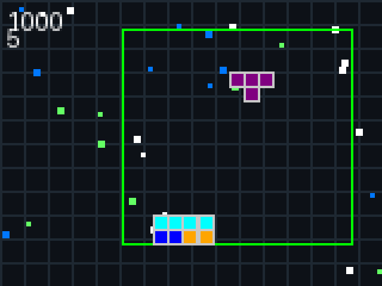

🎮 Tetris - 1980s Retro Background 🎮
Preview (4x Scale)

✨ Features
- Retro Grid Pattern: Subtle 10-pixel grid reminiscent of 1980s computer displays
- GitHub-Themed Starfield: 30 stars in GitHub blue (#0078FF), retro green, and white
- 8-Bit Aesthetic: Pixel-perfect rendering that evokes classic arcade games
- Memory Efficient: Lightweight implementation suitable for embedded devices
- Static Pattern: Uses seeded random generation for consistent appearance
🎨 Color Palette
- Background: Dark space theme (13, 17, 23)
- Grid Lines: Subtle gray (30, 40, 50)
- Stars - GitHub Blue: (0, 120, 255)
- Stars - Retro Green: (100, 255, 100)
- Stars - White: (255, 255, 255)
- Court Border: Classic green (0, 255, 0)
💻 Implementation Details
- Background drawn before each frame using
draw_retro_background()
- Stars initialized once during game setup with consistent seed (42)
- Grid pattern drawn with horizontal and vertical lines at 10-pixel intervals
- All rendering uses badgeware primitives for hardware compatibility